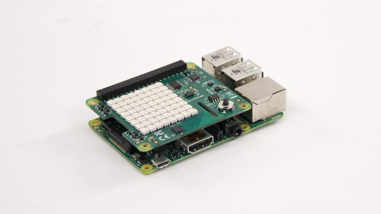
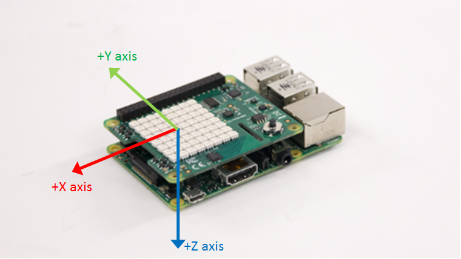
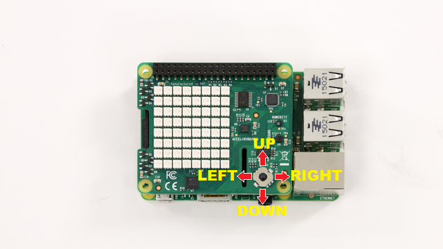
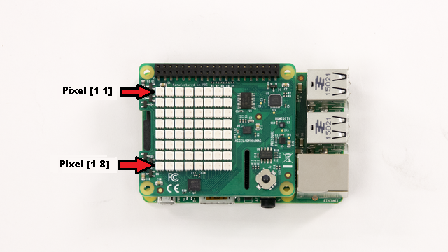
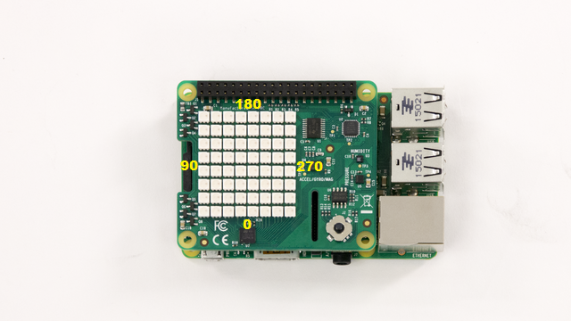

Working with Raspberry Pi SenseHAT
This example shows you how to read the sensor values, read the position of joystick and control the LED Matrix on Raspberry Pi® Sense HAT using MATLAB® Support Package for Raspberry Pi Hardware.
Contents
Introduction
The Raspberry Pi Sense HAT is an add-on board that includes an 8X8 RGB LED matrix, a five-position joystick and the following sensors:
- Humidity sensor
- Pressure sensor
- IMU sensor (Accelerometer, Gyroscope, and Magnetometer).
In this example you will learn how to create a sensehat object to connect to the Raspberry Pi Sense HAT, read sensor values, read the position of the joystick and control the LED matrix.
Prerequisites
- We recommend completing Getting Started with MATLAB Support Package for Raspberry Pi Hardware example
Required Hardware
To run this example you will need the following hardware:
- Raspberry Pi hardware
- Raspberry Pi Sense HAT
Connect Sense HAT
Attach the Sense HAT to the Raspberry Pi expansion header. Make sure that you power down your Raspberry Pi before attempting to attach the Sense HAT.

Create a Sense HAT object
Create a Sense HAT object by executing the following on the MATLAB prompt.
clear rpi clear mysensehat rpi = raspi; mysensehat = sensehat(rpi);
mysensehat is a handle to a sensehat object.
Let us read the temperature from Sense HAT.
readTemperature(mysensehat)
Reading Environmental Sensors
Sense HAT includes humidity and pressure sensors which measure the temperature, the pressure and the humidity. Let's read the value of humidity and pressure measured by these sensors.
readHumidity(mysensehat) readPressure(mysensehat)
Temperature can be read from either the humidity sensor or the pressure sensor. To read the temperature from the humidity sensor, execute the following on the MATLAB prompt:
readTemperature(mysensehat,'usehumiditysensor')
To read the temperature from the pressure sensor, execute the following on the MATLAB prompt:
readTemperature(mysensehat,'usepressuresensor')
By default, the temperature is read from the humidity sensor. Hence, readTemperature(mysensehat) is same as readTemperature(mysensehat,'HumiditySensor').
Read the IMU sensor.
Sense HAT has an IMU sensor which consists of an accelerometer, a gyroscope and a magnetometer. The IMU sensor measures acceleration, angular velocity and magnetic field along the X, Y and Z axis. To read the acceleration, execute the following on the MATLAB prompt:
readAcceleration(mysensehat)
readAcceleration returns a 1-by-3 vector of acceleration values measured along the X, Y and Z axis.
To read the angular velocity, execute the following on the MATLAB prompt:
readAngularVelocity(mysensehat)
readAngularVelocity returns a 1-by-3 vector of angular velocity values measured along the X, Y, and Z axis.
To read the magnetic field, execute the following on the MATLAB prompt:
readMagneticField(mysensehat)
readMagneticField returns a 1-by-3 vector of magnetic field values measured along the X, Y, and Z axis.

Read the state of the joystick
Sense HAT has a 5 position mini joystick. Let us read the position of the joystick.
readJoystick(mysensehat)
readJoystick returns the a value between 0 to 5 depending on the position of the joystick.
- 0 - Not pressed
- 1 - Centre
- 2 - Left
- 3 - Up
- 4 - Right
- 5 - Down
The numerical values representing joystick positions are ordered with respect to the reference position of the Sense HAT. The HDMI port of the Raspberry Pi board facing downwards is the reference position.

You can monitor a particular joystick position by executing the following on the MATLAB prompt:
readJoystick(mysensehat,'Up')
readJoystick(sensehatObj,position) will return a logical one if the joystick is in the specified position and zero otherwise.
Use the LED matrix
Sense HAT has a matrix of 8x8 RGB LEDs. You can set the color of a particular pixel, display an image or display a scrolling message on the LED matrix. Let us set the color of the pixel in the 3rd row, 6th column to cyan.
writePixel(mysensehat,[6 3],'cyan')
Observe that the pixel in the specified location is now cyan in color.
The rows and columns are numbered 1 to 8. Pixel at location [1 1] is at the top left corner of the LED Matrix. The location is with respect to the reference position of the Sense HAT. The HDMI port of the Raspberry Pi board facing downwards is the reference position.

Color of a pixel can be specified by name. The supported colors are:
- Red
- Blue
- Green
- Cyan
- Magenta
- Yellow
- White
You can also specify any other color by using a 1x3 array of R, G, B values. For example, setting the pixel to [255 192 203], would set it to pink. Now, let us display an image on the LED matrix.
image = imread('senseHAT_demo.png');
displayImage(mysensehat,image)
The image must be an NxMx3 array of uint8 values. You can change the orientation of the displayed image by executing the following on the MATLAB prompt:
image = imread('sensehat_demo.png');
displayImage(mysensehat,image,90)
The Orientation of the image can be set to 0, 90, 180 or 270 degrees. These are defined with respect to the reference position of the Sense HAT. The HDMI port of the Raspberry Pi board facing downwards is the reference position.

LED Matrix can be used to display messages in the form of a scrolling text. The text scrolls from left to right. You can change the orientation of scroll by setting the 'Orientation' property of LEDMatrix. Let us display 'Hello World' on the LED Matrix.
displayMessage(mysensehat,'Hello World');
By default, the text scrolls with a scrolling speed of 0.1 second and the color of the text is red. To increase the scrolling speed to 0.05 second, execute the following on the MATLAB prompt:
displayMessage(mysensehat,'Hello World','ScrollingSpeed',0.05);
In order to set the text color to yellow, execute the following on the MATLAB prompt:
displayMessage(mysensehat,'Hello World','textcolor','y');
Similarly, in order to set the background color to white, execute the following on the MATLAB prompt:
displayMessage(mysensehat,'Hello World','textColor','y','backgroundColor','w');
You can rotate the text by specifying the orientation for the display. Let us specify orientation as 90 and display the text message.
displayMessage(mysensehat,'Hello World','orientation',90);
Now, let us try to display a numeric value on the LED matrix. Read the value of temperature and display it on the LED matrix.
displayMessage(mysensehat,readTemperature(mysensehat));
To clear the LED matrix, execute the following on the MATLAB prompt.
clearLEDMatrix(mysensehat);
Summary
This example introduced the workflow for using MATLAB Support Package for Raspberry Pi Sense HAT.